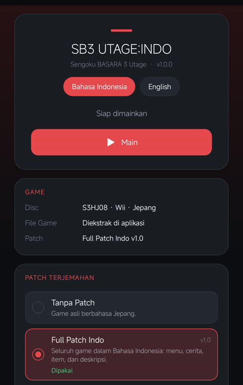

Sengoku BASARA 3 Utage, di Android, berbahasa Indonesia.
Kode game Wii dikompilasi ulang menjadi aplikasi Android native, bukan emulator. Terjemahan dipasang dari halaman pertama aplikasi, dan versi Jepang asli tetap bisa dimainkan kapan saja.
Android 10 ke atas (arm64). Game tidak disertakan: pakai ISO/RVZ Sengoku Basara 3 Utage (Jepang, S3HJ08) milikmu sendiri. Catatan rilis

Ini project resmi DeZer04. Ada project Utage 3 lain yang berbeda dan tidak terkait dengan kami.
Unduh hanya dari halaman ini atau github.com/DeZer04/sb3utage-indo. Ciri aplikasinya: nama SB3 UTAGE:INDO, ID paket io.github.dezer04.sb3utage.
Patch terjemahan
Pilih di halaman pertama aplikasi, tekan Pasang. Patch dibuat dari file game milikmu sendiri, dan tiap patch punya folder sendiri, jadi berpindah antara Indonesia dan Jepang asli langsung bisa.
Full Patch Indo
Seluruh game dalam Bahasa Indonesia: menu, cerita, item, deskripsi, dan grafis, plus subtitle Indonesia di 25 video cerita.
Full Indo + Tekstur Sin-Nohara
Full Patch Indo dengan mod tekstur Bahasa Indonesia buatan Sin-Nohara: menu dan judul buatannya tampil di tempat yang ia buat, sisanya dari Full Patch Indo. Butuh aplikasi 1.0.4. Di HP dengan RAM kecil, set Ukuran Tekstur ke 1x (Pengaturan › Tekstur, aplikasi 1.0.5).
Tekstur oleh Sin-Nohara. Dukung pembuatnya di Saweria.
Deskripsi Only
Hanya nama dan deskripsi item, perlengkapan, senjata, jurus, dan kemampuan. Sisanya tetap Jepang.
Tanpa Patch
Game asli tanpa perubahan. Bisa dipilih kapan saja tanpa memasang ulang.
Cara pakai di Android
- Pasang APK lalu buka. Izinkan akses file saat diminta.
- Pilih file game (ISO/RVZ S3HJ08): Ekstrak (sekali, sekitar 4 GB, loading paling cepat) atau Baca dari File (langsung dari ISO/RVZ).
- Di halaman pertama, pilih patch terjemahan lalu tekan Pasang. Aplikasi mengunduh dan memasangnya sendiri.
- Tekan Main. Pengaturan ada di menu dalam game (tombol Back atau ikon roda gigi).
Isi aplikasinya
- Layar lebar 16:9 asli, atau 4:3 sesuai pilihan.
- Tombol sentuh dengan nama ala PS3, plus dukungan gamepad Bluetooth dan mode dua pemain.
- Perekam bawaan: gambar dan suara game, tanpa tombol sentuh, ke Movies/SB3UtageINDO.
- Preset grafis dari Extreme Low sampai High, Game Speed, dan Thermal Control.
- Cheat (HP dan BASARA tak terbatas, uang, buka semua) dan cadangan data save.
- Update aplikasi dan patch ditawarkan langsung dari dalam aplikasi.
Main di emulator Dolphin
Lebih suka main di PC? Patcher di browser membuat folder Riivolution dari game milikmu dan file patch. Folder itu dipakai Dolphin lewat menu Start with Riivolution Patches. Semua diproses di komputermu, tidak ada yang diunggah.
Dukung project ini
SB3 UTAGE:INDO gratis dan dikerjakan di waktu luang: porting, terjemahan, dan pengujian di banyak HP. Kalau project ini berguna buatmu, dukungan lewat Saweria membantu pengembangannya terus berjalan. Tekstur Indonesia di pilihan Full Indo + Tekstur Sin-Nohara dibuat oleh Sin-Nohara.
HP yang sudah dites
| HP | Chip / GPU | Hasil | Versi |
|---|---|---|---|
| Poco X6 5G | Snapdragon 7s Gen 2 / Adreno 710 | 45–60 fps di render 1x, 40–52 di 1.5x saat battle ramai | 1.0.3 |
| Poco X7 Pro | Dimensity 8400 Ultra / Mali-G720 MC7 | Median 47 fps di render 2x (build profiling, lebih lambat dari rilis) | 1.0.0 |
| Infinix GT 10 Pro | Dimensity 8050 / Mali-G77 MC9 | Median 50–58 fps di render 1.5x | 0.5.x |
| Infinix X6882 | Helio G99 / Mali-G57 MC2 | 25–36 fps saat battle ramai dengan GX Thread | 0.5.x |
| Infinix X668C | Unisoc T616 / Mali-G57 MP1 | Sekitar 30 fps di render 360p–480p dengan Kunci 30 FPS, 10–15 fps di 720p; GPU jadi batas, tekstur Sin-Nohara lebih berat dari Full Patch Indo | 1.0.4 |
| OPPO A54 | Helio P35 / PowerVR GE8320 | Median 25–30 fps dengan Kunci 30 FPS di render 0.75x, 16–20 fps saat paling ramai; CPU jadi batas | 1.0.5 |
Pengguna GPU PowerVR (misalnya OPPO A54, Helio P35 / PowerVR GE8320): kilau putih saat ultimate kadang berkedip kuning di beberapa frame. Ini hanya visual dan masih ditelusuri. Pakai preset Low atau render 0.5x–0.75x dengan Kunci 30 FPS, dan setelah update tunggu Shaders 100% sebelum main.
Lapor masalah
Di aplikasi: Pengaturan › Sistem › Share Log. Lampirkan zip-nya, dengan apa yang sedang kamu lakukan, di GitHub Issues.
Cek keaslian file
- sb3utage-indo-1.0.6.1-android-arm64.apk
- sha256 feba9eebd54067f3ab7e0d8fe8457bbebccde83c8147ed04a5648780c20d9c81
- ID paket aplikasi
- io.github.dezer04.sb3utage